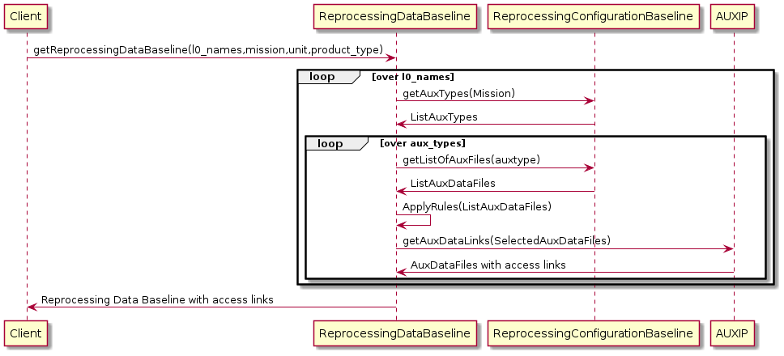
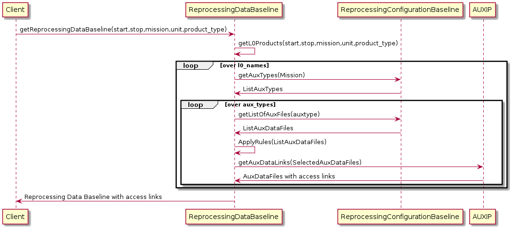
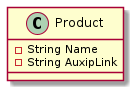

| Description | Version | Date |
|---|---|---|
| Issued | 1.0 | 17/06/2021 |
Change Log:
Table of contents
2.1 Reprocessing Data Baseline Description 7
3. AUXIP INTERFACE DESCRIPTION 8
3.1 Reprocessing Data Baseline based on L0 names 8
3.2 Reprocessing Data Baseline based on sensing period 9
3.4 Query Reprocessing Data Baseline 9
3.4.1 Query with only one level 0 product name 10
3.4.2 Query with a list of level 0 product names 11
3.4.3 Query with sensing period 11
3.4.4 Example of query response 11
3.5 Query Reprocessing Data Baseline Response 12
5. APPENDIX A ODATA METADATA DESCRIPTION 14
This documents details the API entry points for the Reprocessing Data Baseline API. It gives the summary of the data access through an OData V4 format.
OData Documentation http://www.odata.org/documentation
OData Protocol http://docs.oasis-open.org/odata/odata/v4.01/odata-v4.01-part1-protocol.html
Reprocessing Data Baseline API User Manual
REPROCESSING REFERENCE PACKAGE PREPARATION
| Term | Definition |
|---|---|
| API | A set of functions and procedures allowing the creation of applications that access the features or data of an operating system, application, or other service. |
| AUX_File | Auxiliary file used in a satellite processing chain |
| Acronym | Signification |
|---|---|
| AD | Applicable Document |
| UUID | Universally Unique Identifier – Allows to identify an instance |
| JSON | JavaScript Object Notation, commonly used format in web services |
| URI | Uniform Resource Identifier |
The main goal of Reprocessing Data baseline API is to identify for each Level-0 product name and Level-1/2 product type to be reprocessed, the applicable up to date list of auxiliary data files to be used for the reprocessing phase as well as the latest applicable processor version.
All requests sent to the Reprocessing Data Baseline API passes through the Kong gateway API to check the client credentials.
If clients are not authenticated, they will be redirected the Keycloak interface to create an account or to be authenticated.
Client should retrieve the access token via a Keycloak interface in order to be able to send requests to the Reprocessing Data Baseline API.
The nominal use scenario for getting the reprocessing data baseline for the reprocessing purposes is shown in the figure below.

Figure 2 : use case based on L0 names
The reprocessing configuration baseline API and the AUXIP API shall be used together with the reprocessing data baseline API to retrieve the requested applicable up to date list of auxiliary data products to be used for the reprocessing.

Figure 4 : Use case based on sensing period
The figure below shows the Reprocessing Data Baseline basic Product Entity model.

Figure 5 : Product Entity Model
| Product Property | Mandatory | Description | Example |
|---|---|---|---|
| Name | Yes | The name of the applicable auxiliary data product. | S1__AUX_WND_V20201008T210000_G20201005T061649.SAFE.zip |
| AuxipLink | Yes | The AUXIP retrieval link of the applicable auxiliary data product. | https://reprocessing-preparation.ml/auxip.svc/Products (88902515-05b0-401b-9a32-1a0eb408ddd1)/$value |
Table 1: Product Properties in GET applicable List Response
The Query of applicable up to date reprocessing auxiliary data function is achieved through standard Odata API Function, the output of this function is list of Entity Model described above.
Only one unbounded function called getReprocessingDataBaseline() is exposed as Odata API function for the Reprocessing Data Baseline service, this function is overloaded and can be called as follows:
With a comma separated list of level 0 products names + mission + unit + product_type :
With sensing time interval (start and stop) + mission + unit + product_type :
| Parameter | Description | Example |
|---|---|---|
| l0_names | Comma separated list of level 0 products names. | 'S3B_OL_0_EFR____20201029T230119_20201029T230319_20201030T000536_0119_045_115______LN1_O_NR_002.SEN3,S3B_OL_0_EFR____20201104T001454_20201104T001654_20201104T011621_0119_045_187______LN1_O_NR_002.SEN3' |
| mission | Mission to be considered while retrieving auxiliary data files | Can be one of the following : 'S2MSI', 'S1SAR', 'S3OLCI', 'S3MWR', 'S3SRAL', 'S3SYN', 'S3SLSTR' |
| unit | Platform Serial Identifier | 'A', 'B' |
| product_type | L1/L2 type of the product to be reprocessed. This type is mission dependent. |
Depending of the mission S1SAR : { 'L1SLC', 'L1GRD', 'L2OCN' } S2MSI : { 'L1A', 'L1B', 'L1C', 'L2A' } S3MWR : { 'L1CAL', 'L1MWR' } S3OLCI : {'L1EFR', 'L1ERR' , 'L2LFR', 'L2LRR' } S3SLSTR : { 'L1RBT', 'L2LST', 'L2FRP' } S3SRAL : { 'L1CAL', 'L1SRA', 'L2LAN' } S3SYN : { 'L1MISR', 'L2' } |
| start | Sensing start date time | 2019-10-06T18:00:00Z |
| stop | Sensing start date time | 2020-11-06T19:00:00Z |
Table 1 : getReprocessingDataBaseline parameters
Based on the level 0 'S1A_IW_RAW__0NDV_20201001T062556_20201001T063833_034599_040733_8B28.SAFE.zip', the applicable auxiliary data files needed for the reprocessing of product type 'L1SLC' of the mission S1SAR for the satellite unit A can be retrieved as follows:
The same query as before but for two different level 0 products:
Instead of giving the names of the level 0 products, you can do a query based on an acquisition period:
The GET response of applicable products list is an HTTP response to the GET reprocessing data baseline request. As recommended by the OData specification, the Reprocessing Data Baseline OData service supports responses in JSON.
The following overall HTTP status codes may be returned with the response:
200 OK: if the request is accepted and a response can be returned
400 Bad Request
401 Unauthorized: if the requesting client is unauthorised
404 Not Found
500 Internal Server Error
The Reprocessing Data Baseline API enforces that only properly authenticated clients are accepted and that the access rights are applied. If a client calls the service function without permission, it is informed with a corresponding return message.
Please refer to the User Manual document [DR-3] for the registration and access token generation procedures.
<?xml version="1.0" encoding="UTF-8"?>
<edmx:Edmx Version="4.0" xmlns:edmx="http://docs.oasis-open.org/odata/ns/edmx">
<edmx:DataServices>
<Schema xmlns="http://docs.oasis-open.org/odata/ns/edm" Namespace="OData.CSC">
<EntityType Name="DataBaseline">
<Property Name="Level0" Type="Edm.String"></Property>
<Property Name="AuxDataFiles" Type="Collection(OData.CSC.Product)"></Property>
</EntityType>
<ComplexType Name="Product">
<Property Name="Name" Type="Edm.String" Nullable="false"></Property>
<Property Name="AuxipLink" Type="Edm.String" Nullable="false"></Property>
</ComplexType>
<Function Name="getReprocessingDataBaseline">
<Parameter Name="l0_names" Type="Edm.String" Nullable="false"></Parameter>
<Parameter Name="mission" Type="Edm.String" Nullable="false"></Parameter>
<Parameter Name="unit" Type="Edm.String" Nullable="false"></Parameter>
<Parameter Name="product_type" Type="Edm.String" Nullable="false"></Parameter>
<ReturnType Type="Collection(OData.CSC.DataBaseline)"/>
</Function>
<Function Name="getReprocessingDataBaseline">
<Parameter Name="start" Type="Edm.DateTimeOffset" Nullable="false"></Parameter>
<Parameter Name="stop" Type="Edm.DateTimeOffset" Nullable="false"></Parameter>
<Parameter Name="mission" Type="Edm.String" Nullable="false"></Parameter>
<Parameter Name="unit" Type="Edm.String" Nullable="false"></Parameter>
<Parameter Name="product_type" Type="Edm.String" Nullable="false"></Parameter>
<ReturnType Type="Collection(OData.CSC.DataBaseline)"/>
</Function>
<EntityContainer Name="Container">
<FunctionImport Name="getReprocessingDataBaseline" Function="OData.CSC.getReprocessingDataBaseline" IncludeInServiceDocument="true"></FunctionImport>
</EntityContainer>
</Schema>
</edmx:DataServices>
</edmx:Edmx>